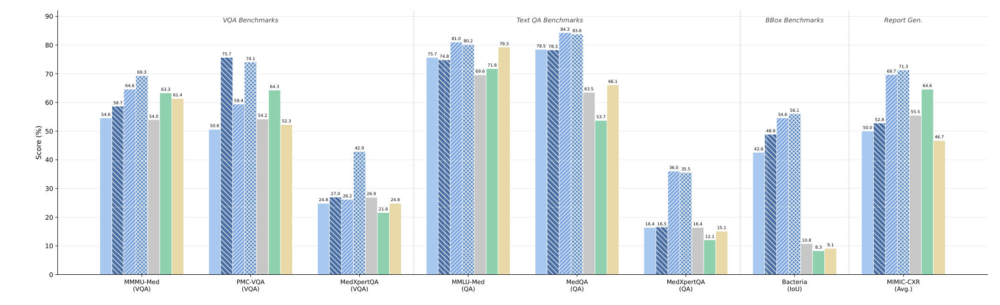
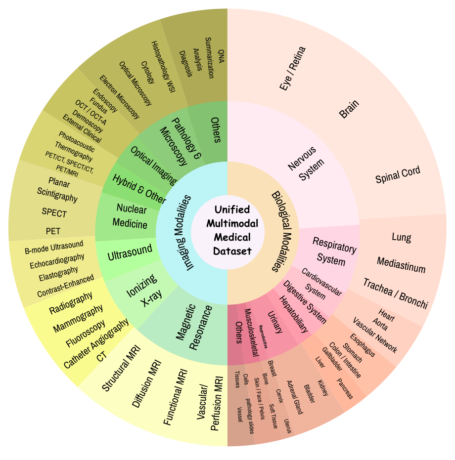
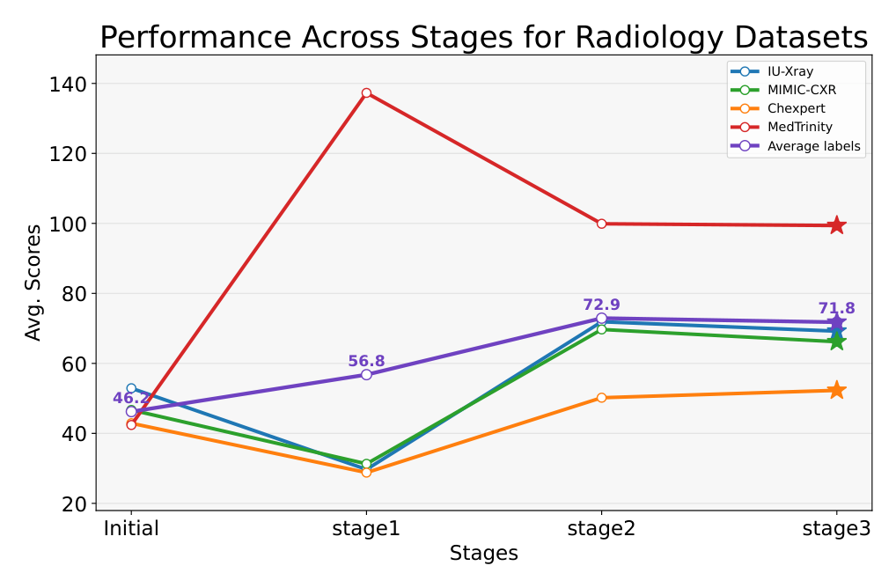
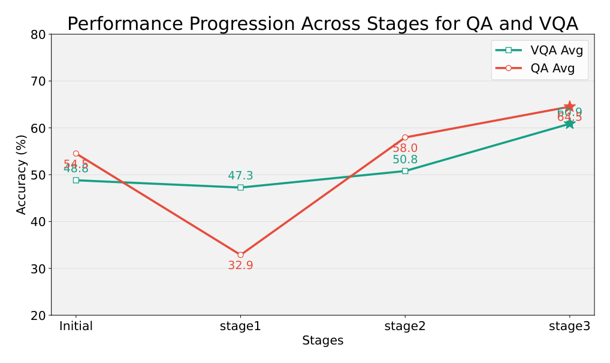

MedMO 深读：四阶段后训练如何让医学 MLLM 同时看懂与框准？
Grounding and Understanding Multimodal Large Language Model for Medical Images
导读。MedMO 要解决的是一个很实际的冲突：医学 MLLM 既要看懂影像并回答临床问题，又要把答案落到可核验的空间位置。这两类能力的数据条件相反——理解数据多而便宜，框选标注少、贵，并且依赖高分辨率。MedMO 的答案是四阶段后训练：先用 18.5M 低分辨率样本打底，再用 3M 高分辨率 grounding 数据补空间能力，随后指令微调，最后用 GRPO 和纯几何 bbox 奖励打磨定位。本文按“问题 → 配方 → 奖励 → 证据 → 边界”组织，先看为什么顺序重要，再检查实验是否真的支持这个主张。
理解监督海量，grounding 标注稀缺；低分辨率足够对齐语义，却不够框准小病灶。
低分辨率先学跨模态对齐，高分辨率再注入框选，指令与 RL 放在后面收口。
GIoU、归一化 L1、匈牙利匹配与 FP/FN 惩罚只看几何，不奖励漂亮但错的文本。
VQA、报告和 grounding 分开验；grounding 均分 56.8 是主战场，局限也要逐项看。
这篇文章的主线
- 模型定位：MedMO 从 Qwen3-VL-8B-Instruct 出发，用公开医学数据后训练成“理解 + 报告 + grounding”统一模型。
- 工程判断：18.5M 低分辨率数据负责语义对齐，3M 高分辨率数据专门补 grounding，避免海量理解数据淹没稀缺框选监督。
- 方法关键：bbox 奖励只看几何匹配，不让 RL 被流利文本骗分，因此定位能力能被单独打磨。
- 阅读边界：最强证据在 grounding；报告生成和 VQA 多数领先，但不是逐项全胜，复现门槛也很高。
{kind=link}

1. 核心问题：理解要“多而便宜”，框选要“少而精且高分辨率”，顺序怎么排？
论文开篇把通用 MLLM 落到医学的障碍归成三条（§1）：(1) 多数医学模型靠蒸馏专有大模型的输出来造数据，缺乏结构化监督，会放大幻觉、且在细粒度临床推理上 grounding 不准；(2) 蒸馏流水线只拿生成式输出、没有可核验的监督，前后不一致；(3) 现有模型大多只盯单任务或窄模态（只放射、或只病理），做不到跨模态统一。
问题：为什么不能把“看懂”和“框准”一锅端，端到端一起训？
引导：注意这两件事的数据经济学是反的。“看懂”——captioning/VQA/QA——的监督便宜且海量（MedTrinity 一家就 18.5M）；“框准”——bounding box——的监督稀缺且贵（要专家逐框标注，且小病灶/细胞在低分辨率下根本分不清边界）。一锅端的后果是：海量的理解数据会在梯度上淹没稀少的框选数据，而低分辨率又让“框”这件事在物理上不可能精确——IoU 在小目标上由几像素的边界误差主导。
回答：于是 MedMO 把它拆成课程式四阶段：先用大规模、低分辨率（768²）的理解数据把跨模态对齐打底；再把分辨率升到 1280²、专门喂带框标注的高质量数据注入 grounding；再用指令数据对齐人类问答口吻；最后用 RL 打磨。分辨率升级不是装饰——它是“补 grounding”这一步在物理上的前提条件。
2. 贡献拆解：作者明确提出了什么？
作者明确提出的贡献（论文 §1 列点）：
- 一个开源的后训练医学多模态大模型 MedMO，面向“医学影像理解 + grounding”的统一能力。
- 整理 26M+、来自 45 个数据集的多模态语料，并建立多阶段后训练，渐进增强跨模态对齐与推理——作者称其为“通往医学通用基础模型的可扩展路线图”。
- 构造一个专门的 Cell 检测数据集（取自开源显微镜图像，如 DeepCell、Bacteria，含不同细胞数量与密度），用来评测 VLM 的检测能力。
- 跨数据与方法维度的系统实验与分析，给出一个面向后续医学多模态研究的开放基准与训练配方。
读者能进一步推断的是：真正的方法新意集中在两点——其一，四阶段课程 + 分辨率升级把“理解/grounding 的数据经济学冲突”工程化地解开；其二，把一个纯几何、可验证的 bbox 奖励接进 GRPO，让 RL 只动空间精度。其余更多是“规模 + 配方 + 开源”的整合，而非全新算法——这点论文自己也坦承：四个奖励项里多数“在 RL 训练中常见”，唯 bbox reward 是其引入的可验证、空间锚定信号。
3. 数据：26M+ / 45 个数据集，但 18.5M 压在单一 MedTrinity 上
语料统一了放射、病理、眼科、皮肤科与外科影像，共 26M+ 样本，含图文对与纯文本，覆盖多模态成像（X-ray、CT、MRI、超声、光学、核医学）与多生物系统（胸、脑、心、肝、肾、眼、结肠、组织）。其中MedTrinity 一家贡献 18.5M 公开指令对，是 Stage 1 的全部主力；grounding 部分另用带框标注的数据集（Chest X-ray、Wrist X-ray、Cell microscopy、CT）。作者还自建了 Cell Benchmark（DeepCell、Bacteria 等显微镜图像）评测检测。
{kind=link}

4. Pipeline：从 Qwen3-VL-8B 出发的四阶段渐进后训练
图 2（论文 Figure 2，矢量排版，提取器跳过，此处转写其结构）给出全流程。底座是 Qwen3-VL-8B-Instruct，其三件套为：视觉编码器 $E_v$、把多层 ViT 特征经 DeepStack 融合投影进语言空间的视觉-语言适配器 $A$、以及语言解码器 $D$。在此之上做四个顺序后训练阶段：
| 阶段 | 数据量 | 分辨率 / 配置 | 目标 | 时长 |
|---|---|---|---|---|
| 1 · 大规模通用医学 SFT | 18.5M（MedTrinity） | 768×768；BS=10，LR=1e-5，cosine，grad accum=2 | 学全局图文对齐，打底医学知识 | 225 h |
| 2 · 高质量医学影像 + grounding SFT | 3M | 1280×1280；BS=2，LR=8e-6，cosine，grad accum=8 | 升分辨率，加入空间定位与细粒度框选 | 155 h |
| 3 · 指令微调 | 4.3M | BS=10，LR=5e-6，grad accum=2 | 对齐人类风格的医学指令跟随 | 110 h |
| 4 · 强化学习（GRPO） | 300K | 四路奖励：标签准确 / bbox IoU / 标签计数 / soft 超长惩罚 | 提升指令跟随与定位精度 | 98 h |
问题：为什么 Stage 1 在 768²、到 Stage 2 才升 1280²，而不是全程高分辨率？
引导：高分辨率 token 数随边长平方膨胀，注意力又是 token 数的平方——18.5M 样本全程 1280² 会让 Stage 1 的算力账爆掉。而 Stage 1 要学的“全局图文对齐”并不依赖像素级细节，768² 足够。
回答：所以分辨率跟着任务需求走：对齐阶段省着用、grounding 阶段（3M，量小十倍）才舍得升到 1280²，把算力花在真正需要细节的地方。这是“课程 + 资源分配”的一体两面。
5. 方法：把“理解 vs grounding”的冲突拆成课程，再用可验证的几何奖励接住 RL
5.1 SFT 目标：标准下一 token 预测
四个 SFT 阶段都用 vision-language 的标准自回归目标。给定图像 $v$ 与文本序列 $x=\{x_1,\dots,x_n\}$，模型最大化目标响应 $y=\{y_1,\dots,y_m\}$ 的条件似然：
<box>[[156,516,231,607]]</box>），grounding 被当成“也是要预测的文本”塞进同一个目标——这是把“框选”统一进语言建模的关键简化，也意味着定位精度此时只受交叉熵的弱约束。5.2 GRPO：为什么 RL 阶段要“组内相对”而不是绝对奖励
Stage 4 用 GRPO（Group Relative Policy Optimization）。对每个输入 $(v,x)$，从当前策略 $\pi_\theta$ 采样 $G$ 个响应，逐个用奖励 $r(v,x,y)$ 打分，再把分数组内标准化成优势：
5.3 核心机制：Bounding Box 可验证奖励，怎么做到“分辨率无关 + 只奖励空间精度”
问题：RL 要“可验证”的奖励。可验证为什么重要，几何奖励又怎么保证不被“流利但错的文本”骗过去？
引导：若奖励来自另一个模型当裁判，就可能被“说得漂亮但框错”的回答骗高分（reward hacking）。纯几何的奖励——直接拿预测框和真值框算重叠——是规则可核验的：框在哪、对不对，用坐标一算便知，骗不了。它也只对空间精度求导，碰不到语言流畅度，于是 RL 不会为了刷奖励去牺牲文本能力。
回答：MedMO 的 bbox 奖励分四步搭起来。
第一步 · 分辨率无关的 L1。给真值框 $G=\{g_j\}_{j=1}^{G}$ 与预测框 $P=\{p_i\}_{i=1}^{P}$（XYXY 格式），单对的 L1 误差按图像对角线归一化：
第二步 · GIoU 而非 IoU。用 $\text{GIoU}\in[-1,1]$ 与 L1 组合成代价矩阵（$w_{L1}=5,\ w_G=2$）：
第三步 · 匈牙利匹配，解决“多框对多框”。一张图常有多个病灶/细胞，预测框与真值框需要一一对应才能打分。在代价矩阵 $C$ 上做匈牙利匹配，得到一对一指派 $M\subseteq\{1\dots P\}\times\{1\dots G\}$。对每个匹配对 $(i,j)\in M$ 定义一个综合质量分（GIoU 与 L1 的加权，再归一）：
第四步 · 覆盖归一 + FP/FN 惩罚，封死“刷框”漏洞。把匹配对的质量分按真值框数覆盖归一，并对漏检（FN：未被匹配的真值框）与误检（FP：多余的预测框）罚分，最后 clip 到 $[0,1]$：
路径二（自下而上，证据）：表 4 显示加入该奖励后 IoU 在 NIH/DeepLesion/Bacteria 上一致上升（+4.5 / +0.4 / +0.4）。增益“小但稳”恰好印证机制定位——重活已由 Stage 2 的高分辨率 grounding 做完，RL 只是打磨，所以幅度小、却跨数据集稳定为正，且 QA/VQA 没有因 RL 而塌（图 6 Stage 3 仍在升），说明奖励确实没毒化语言能力。
6. 训练账本：64× MI210 训 25 天，四阶段 225/155/110/98 小时
MedMO 在 64× AMD Instinct MI210（64GB）上训练，总时长约 25 天，遵循四阶段流水线（§4.1）：Stage 1 大规模 SFT（18.5M @ 768²，225 h）→ Stage 2 高分辨率微调（3M @ 1280²，155 h）→ Stage 3 指令微调（4.3M，110 h）→ Stage 4 医学导向 RL（300K，98 h）。训练用 TRL 框架；超参见 §4.1（Stage 1：BS=10/LR=1e-5；Stage 2：BS=2/LR=8e-6/grad accum=8；Stage 3：BS=10/LR=5e-6）。
7. 实验：理解、报告生成、grounding 三场，逐表看
判断：三组证据测的是同一件事的三个侧面——“看懂”（VQA/QA）、“写对”（报告生成）、“框准”（grounding）。MedMO 提供 4 个变体：MedMO-4B、4B-Next、8B、8B-Next（“Next”为更强的指令/RL 版本）。逐表看。
7.1 医学 VQA 与文本 QA（表 1）
| Model | MMMU-Med | PMC-VQA | OMVQA | MedXQA | VQA Avg. | MMLU-Med | MedQA | QA Avg. |
|---|---|---|---|---|---|---|---|---|
| GPT-4.1（闭源） | 75.2 | 65.0 | 72.2 | 45.2 | 63.4 | 89.6 | 77.0 | 70.0 |
| Lingshu-7B | 54.0 | 77.2/43.0 | 82.4/33.2 | 26.9 | 55.1 | 69.6 | 62.0/53.8 | 53.1 |
| Fleming-VL-8B | 63.3 | 78.4/56.4 | 86.9/80.0 | 21.6 | 64.3 | 71.8 | 40.5/37.3 | 45.7 |
| Qwen3VL-8B（底座） | 61.4 | 54.1/31.2 | 34.3/15.0 | 24.8 | 40.5 | 79.3 | 56.1/47.7 | 53.6 |
| MedMO-4B | 54.6 | 50.9/35.0 | 41.0/30.0 | 24.8 | 45.4 | 75.7 | 57.5/47.7 | 55.1 |
| MedMO-4B-Next | 58.7 | 79.7/59.6 | 78.0/74.0 | 27.0 | 68.5 | 74.8 | 57.4/47.6 | 55.0 |
| MedMO-8B | 64.6 | 72.3/64.7 | 70.6/70.0 | 26.2 | 63.2 | 81.0 | 66.5/60.2 | 61.3 |
| MedMO-8B-Next | 69.3 | 86.4/68.0 | 83.0/81.6 | 42.9 | 72.7 | 80.2 | 65.2/57.8 | 60.1 |
这张表要支撑的结论是：MedMO-8B-Next 在开源阵营里 VQA 均分最高（72.7%），超 Fleming-VL-8B（64.3%）+6.6、超 Lingshu-7B +17.6；连小一号的 4B-Next（68.5%）也压过 Fleming。一个有意思的细节——MedMO-8B（base，未走 Next 的 RL）反而拿下全体最高 QA 均分 61.3%，在 MedQA（84.3）、Medbullets 上领先，提示“base 指令微调已给出很强的纯推理，RL 主要帮 VQA/grounding”。
7.2 医学报告生成（表 2）
| Model | MIMIC-CXR CIDEr | MIMIC RaTE | MIMIC Semb | CheXpert CIDEr | IU-Xray CIDEr | Med-Trinity CIDEr |
|---|---|---|---|---|---|---|
| Lingshu-7B | 109.4 | 52.1 | 30.0 | 79.0 | 180.7 | 74.5 |
| Fleming-VL-8B | 132.5 | 56.7 | 33.6 | 82.2 | 198.6 | 35.8 |
| MedMO-4B-Next | 96.7 | 52.0 | 34.3 | 74.5 | 147.8 | 183.8 |
| MedMO-8B | 140.0 | 57.1 | 50.0 | 87.5 | 169.7 | 270.4 |
| MedMO-8B-Next | 143.4 | 57.7 | 51.5 | 88.3 | 171.9 | 272.1 |
MedMO-8B-Next 在 MIMIC-CXR、CheXpert、Med-Trinity 的 CIDEr 与语义指标（RaTE/Semb）多数第一；尤其 Med-Trinity CIDEr 272.1，超次优开源（Qwen2.5VL-7B 的 81.5）3 倍以上。也要如实说明：IU-Xray 上 Fleming-VL-8B 仍以 CIDEr 198.6 领先，MedMO-8B-Next 171.9 居其后——并非全面碾压。
7.3 医学 grounding（表 3）——MedMO 最硬的一场
| Model | NIH | DeepLesion | Bacteria | MedSG 多视图 | MedSG 跟踪 | MedSG 指代 | Avg. |
|---|---|---|---|---|---|---|---|
| InternVL3-8B | 10.1 | 0.00 | 0.7 | 6.3 | 13.0 | 3.3 | 5.6 |
| Fleming-VL-8B | 0.00 | 0.00 | 8.3 | 42.0 | 36.7 | 16.6 | 17.2 |
| Lingshu-7B | 5.3 | 0.7 | 10.8 | 28.3 | 38.7 | 10.4 | 13.9 |
| Qwen3VL-8B（底座） | 16.4 | 0.00 | 9.16 | 8.4 | 17.8 | 31.4 | 13.8 |
| MedSG-Bench（专用） | – | – | – | 55.0 | 62.1 | 60.4 | – |
| MedMO-8B | 8.83 | 38.5 | 54.6 | 75.8 | 77.2 | 70.1 | 54.2 |
| MedMO-8B-Next | 15.9 | 40.5 | 56.1 | 77.5 | 78.8 | 71.9 | 56.8 |
这是 MedMO 与基线差距最悬殊的一场。均分 56.8% vs 最强基线 Fleming-VL-8B 的 17.2%。两个尖锐对比值得点出：(1) DeepLesion 上 Fleming/InternVL3/Qwen3VL 全是 0.00 IoU——病灶检测是多个医学 VLM 的盲区，而 MedMO-8B-Next 达 40.5；(2) MedMO 在 MedSG 三子任务上甚至超过专用模型 MedSG-Bench（如指代 71.9 vs 60.4）。这把“四阶段 + 高分辨率 grounding + bbox 奖励”的价值落到了实处。但也要说明：NIH 胸片定位上 MedMO-8B-Next 15.9，略低于底座 Qwen3VL-8B 的 16.4——并非每个 grounding 任务都赢。
{kind=link}

8. 消融：阶段曲线证明机制，bbox 奖励“小而稳”地补刀
论文给两组消融：阶段式贡献（图 5、6）与 bbox 可验证奖励（表 4）。
{kind=link}

| Dataset | Before (IoU) | After (IoU) | ∆ (IoU) |
|---|---|---|---|
| NIH | 8.8 | 13.3 | +4.5 |
| DeepLesion | 38.5 | 38.9 | +0.4 |
| Bacteria | 54.6 | 55.0 | +0.4 |
9. 局限与复现门槛：什么时候 MedMO 会偏、会漏？
| 边界 | 论文 / 方法信息 | 读者应如何理解 |
|---|---|---|
| 阶段间性能漂移 | 论文明确承认：阶段式训练带来轻微的任务级性能波动（图 5、6），属大模型常见的灾难性遗忘（论文引 [55]）。未来工作拟改善跨任务保持。 | QA 在 Stage 1 的骤跌是这条的直接体现。四阶段是“取舍后被补偿”，不是单调变好——换语料或砍掉某阶段，结论未必平移。 |
| 数据分布偏放射 | 26M 中 18.5M 来自单一 MedTrinity；grounding 标注集中在 Chest X-ray / Wrist X-ray / Cell / CT。 | “覆盖广”靠图 4 撑，但分布不均：放射类样本远多于病理/皮肤；在欠覆盖模态上的 grounding 泛化论文未单独验证。 |
| 并非全任务 SOTA | IU-Xray 报告 CIDEr 仍由 Fleming 领先；NIH 胸片定位 MedMO-8B-Next（15.9）略低于底座 Qwen3VL-8B（16.4）。 | “consistently leads”是均分与多数任务口径，不是逐格全胜。读图 1/表时按任务看，别一刀切。 |
| RL 增益有限 | bbox 奖励 ∆ 仅 +4.5 / +0.4 / +0.4（表 4）；$\lambda_{\text{FP}},\lambda_{\text{FN}}$ 取值、各阶段 epoch 数论文未给。 | RL 是“锦上添花”而非主引擎；想复现 RL 这一档增益，缺少超参细节会成障碍。 |
| 算力门槛 | 64× MI210 训 25 天；四阶段 225/155/110/98 h。 | 工业级硬件；学术小组难以原样复现全流程，但底座 + 配方 + 权重开源，可在更小规模上验证单阶段。 |
结语：几点学术判断
一句话总结：MedMO 把“医学 MLLM 又要看懂、又要框准”这对数据经济学相反的需求，拆成四阶段课程 + 分辨率从 768 升到 1280 的渐进后训练——便宜的理解数据先打底、稀缺且需高分辨率的 grounding 后注入；再用一个纯几何、可验证的 bbox 奖励（对角线归一 L1 + GIoU + 匈牙利匹配 + FP/FN 惩罚）把定位接进 GRPO，让 RL 只打磨空间精度而不碰语言流畅度。于是，一个从 Qwen3-VL-8B 后训练而来、仅用公开数据的开源模型，能同时在 VQA、文本 QA、报告生成与 grounding 四类任务上压过同档开源基线。尤其在 grounding（均分 56.8% vs 17.2%）上拉开断层式差距。
- “先喂什么、何时升分辨率”是真正的设计变量：理解便宜→先大规模低分辨率打底；grounding 贵且需细节→后小批量高分辨率注入。图 5 在 Stage 2 的陡升、图 6 中 QA 的“先抑后扬”，都是这条课程逻辑的可见指纹。
- “可验证”是奖励设计的红线，几何信号天然满足：bbox 奖励的每个组件都对应一个失败模式——尺度依赖（对角线归一）、非重叠零梯度（GIoU）、多目标指派（匈牙利）、刷框漏洞（FP/FN 惩罚）；纯几何使它规则可核验、与语言能力正交，于是 RL 提升定位（表 4 跨集恒正）而 QA/VQA 不塌。
- 增益的“大小”本身在讲故事：grounding 的断层式领先来自 Stage 2 的高分辨率注入，而 RL 的 ∆ 只有零点几到几个点——主引擎是课程与分辨率，RL 是打磨。把“哪一步贡献多少”分清楚，才不会把整体战绩错记到某个单一组件上。
留给后续的两条反驳/验证路径：(a) 把 18.5M 的 MedTrinity 占比降下来、补齐病理/皮肤等欠覆盖模态，验证“跨模态统一”是真泛化还是放射数据撑出来的；(b) 做“去掉 Stage 2 高分辨率 / 去掉 RL”的等算力对照，量化分辨率升级相对 RL 各自对 grounding 的净贡献——表 4 暗示 RL 边际很小，但需在控制其它阶段不变时直接对比才坐实。
资料来源与图像说明
- Ankan Deria, Komal Kumar, Adinath Madhavrao Dukre, Eran Segal, Salman Khan, Imran Razzak. MedMO: Grounding and Understanding Multimodal Large Language Model for Medical Images. CVPR 2026 / arXiv:2602.06965v2（Mohamed bin Zayed University of Artificial Intelligence）。代码：
github.com/genmilab/MedMO；模型：huggingface.co/collections/MBZUAI/medmo；项目页：genmilab.github.io/MedMO-Page。 - 本文公式（式 1–6 及 bbox 奖励各式）、表格（表 1–4）与全部实验数字以 arXiv PDF 为准。表 1、2 为节选转写（保留代表性基线/变体与均分及关键列，完整逐基准数值见原文）；表 3、4 为完整转写。GRPO（式 3–6）、bbox 奖励（式 2–4 及综合式）写法对照原文 §3.5；DAPO 的 clip-higher / token 级 loss、GIoU [71]、匈牙利匹配为原文引用的既有方法。
- kexue:su 方法与归因：第 1、4、5、8 节关于“理解 vs grounding 的数据经济学冲突如何用课程 + 分辨率升级解开”“bbox 可验证奖励为何分辨率无关、为何用 GIoU 与 FP/FN 惩罚、为何不毒化语言能力”的多路径论证，按
kexue:su方法（动机先行、假设显式、≥2 路径交叉验证）重新推导。检索kexue:su语料库未返回与本文主张（多阶段医学后训练、bbox-GIoU 可验证奖励）真正相关的卡片（返回结果为 GAN/扩散/长度外推等无关条目），故按归因红线仅应用方法、不作任何 [archives] 归因。 - 图像说明：图 1、4、5、6 为本地 PNG，由
extract_figures.py（PyMuPDF，caption 锚定）从 arXiv PDF 裁切，路径assets/figures/medmo/。图 2（四阶段流水线总览）与图 3（定性对比）为矢量/文本排版，提取器跳过，已分别在 §4 表格与正文中转写其结构与代表性样例，未采用模糊整页截图。论文 Figure 3 的定性框选示例（如气胸、细胞、骨折）仅以正文文字引用，不单独配低质截图。